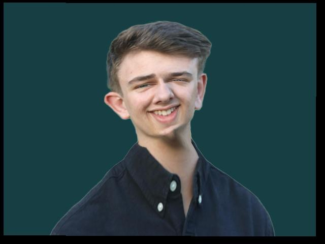

Introduction
This project aims to accomplish three main goals: creating a morph between two faces, calculating the average face of a group, and using that average to generate exaggerated features. The first step involves morphing, which combines two techniques: gradually altering the shape of one image to match another, while simultaneously blending their colors.
Defining Correspondences
In order to succesfully complete a morph there needs to be consistent mapping between the key features of one face to those of the other. The distinct features such as eyes, nose, mouth are mapped to each other manually. Once these points are defined we compute the Delaunay triangulation, as it does not produce overly skinny triangles, so we can later use these in a morph.
Daniel
Chris
Daniel Trianulation
Chris Triangulation
Computing the "Mid-Way Face"
To preview the morphing process, I started by calculating the mid-way face between Chris and myself. I first determined the average shape by averaging the correspondence points from both faces. Next, for each triangle, I calculated the affine transformation matrix that maps the source and target triangles to the corresponding triangle in the average shape. Using inverse warping, I traced back the corresponding points in the original images. Since these coordinates might be non-integers, I applied nearest neighbor interpolation to retrieve the pixel values. Finally, I averaged the pixel colors from both images using cross-dissolving, producing the blended mid-way result.
Mid-Way Face
The Morph Sequence
To generate a complete morph sequence, we repeat the same steps as the midway face but for the desired number of grames. By gradually adjusting the weights from 0 to 1, we smoothly control both the shape transformation and color blending for each frame. For my sequence, I used 45 frames played at 30 FPS.
Daniel-Chris Morph
The "Mean Face" of a Population
To determine the mean face of a population you first need to determine the average of the
points across the dataset. After determining this average it requires morphing each face
to this average point location and then averaging the colors.
I decided to do this for the danes dataset. The following are a sample of what the danes
morphed to the average face look like:
Danes Morphed to Average
After morphing every image in the dataset to the average we can average all of these images to find the average face of the population.
After computing the average dane we can also morph me into the average danish geometry and the average dane into my geometry. I also changed the background of my photo to more closely match the images in the danes dataset.
Daniel
Average Dane
Daniel to Average Dane
Average Dane to Daniel
Caricatures: Extrapolating from the Mean
We can extend the warps that we created in the previous part and extrapolate from the mean to create caricatures. This is done by taking the difference between the mean and my face and amplifying that by a parameter α.
α = 1.25
α = -2
Bells and Whistles: Changing Genders
For this part I recomputed the mean face of the danes dataset but only taking the female images to create a mean face for danish females. I used the resulting mean face to morph myself into and make myself more feminine. I performed three morphs: myself with feminine shape, feminine color, and both.
Daniel
Average Female Dane
Daniel w/ Female Shape
Daniel w/ Female Color
Daniel w/ Female Shape & Color